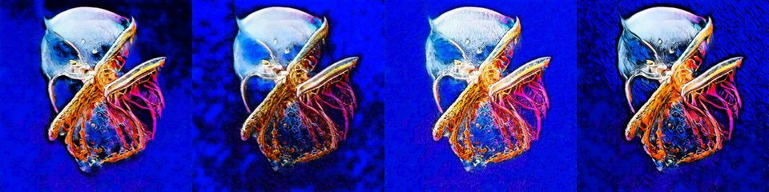

← Async Art — living works · all collections
by Mad Monk · Async Art Master #4654 · four-phase · time rule: UTC
Updates four times a day to reflect sunrise / day / sunset / night cycles.

Sunrise 06:00–06:59 · Day 07:00–17:59 · Sunset 18:00–18:59 · Night 19:00–05:59 (UTC)
The full-size files live on IPFS; each is linked on three public gateways, in the order to try them (gateway.pinata.cloud, ipfs.io, dweb.link). Every line says what our own check found: 5 not pinned by us yet, 1 our own copy, pinned here and verified on upload.
QmQKUKR8YTirK1… gateway.pinata.cloud · ipfs.io · dweb.link — not pinned by us yet, checked 2026-09-23 09:13QmSRyV7G61axEf… gateway.pinata.cloud · ipfs.io · dweb.link — not pinned by us yet, checked 2026-09-23 09:13QmR3pEp43CdttE… gateway.pinata.cloud · ipfs.io · dweb.link — not pinned by us yet, checked 2026-09-23 09:13QmeEnDrxWNTYgB… gateway.pinata.cloud · ipfs.io · dweb.link — not pinned by us yet, checked 2026-09-23 09:13bafybeidjfqywn… gateway.pinata.cloud · ipfs.io · dweb.link — our own copy, pinned here and verified on upload, checked 2026-09-22Qme4h7cP1LRsoh… gateway.pinata.cloud · ipfs.io · dweb.link — not pinned by us yet, checked 2026-09-23 09:13QmSRyV7G61axEf… gateway.pinata.cloud · ipfs.io · dweb.link — not pinned by us yet, checked 2026-09-23 09:13QmSRyV7G61axEf… gateway.pinata.cloud · ipfs.io · dweb.link — not pinned by us yet, checked 2026-09-23 09:13QmeEnDrxWNTYgB… gateway.pinata.cloud · ipfs.io · dweb.link — not pinned by us yet, checked 2026-09-23 09:13QmQKUKR8YTirK1… gateway.pinata.cloud · ipfs.io · dweb.link — not pinned by us yet, checked 2026-09-23 09:13QmR3pEp43CdttE… gateway.pinata.cloud · ipfs.io · dweb.link — not pinned by us yet, checked 2026-09-23 09:13The Primordials by Mad Monk The very first week of 2022, a team of scientists working for a secret global organization made a striking discovery. An underground sea from the primordial times in buried deep in beneath the Himalayas. These are some of the images leaked by members of the science team. It appears some of the images are edited artistically prior to release. I know not why. I will release the images on various platforms for the utmost coverage.
async.art · OpenSea · Etherscan
Generated archive pages. Content identifiers point to the public IPFS network.